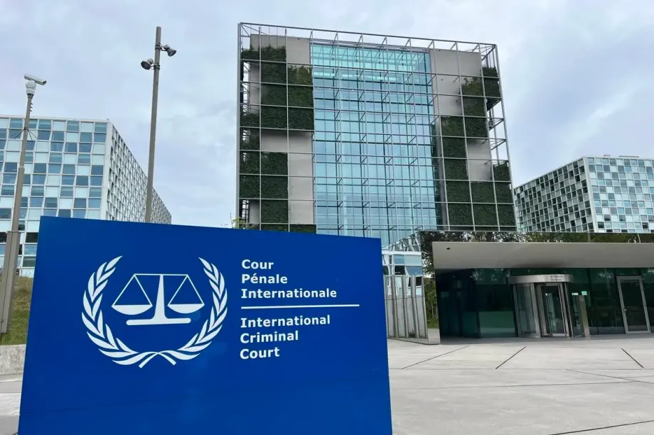
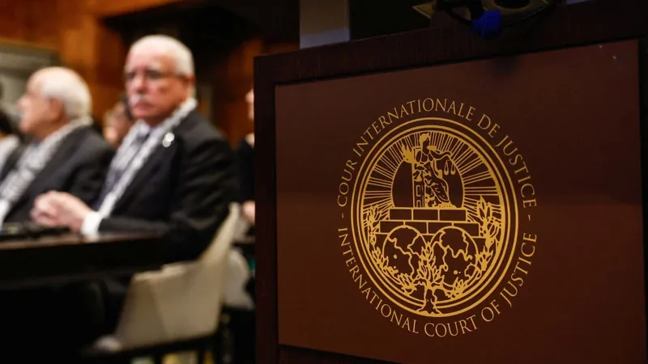
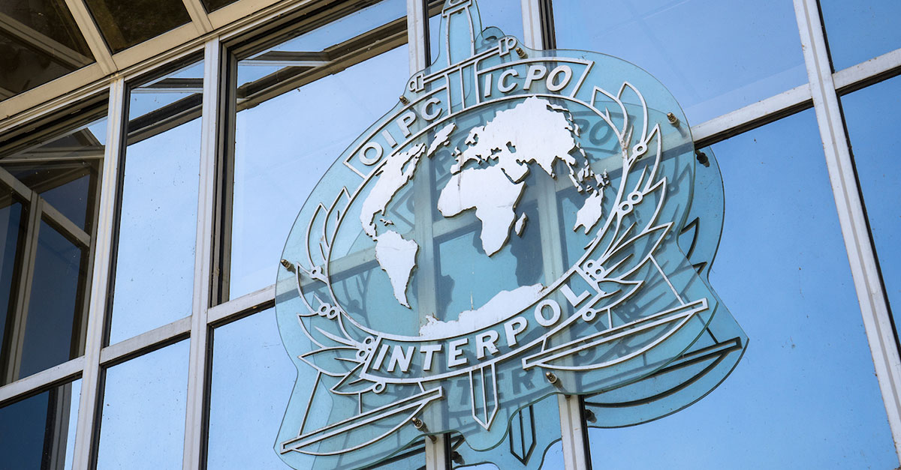

Iniciativas
Conheça Instituições Parceiras da ONU ao Redor do Mundo
A Organização das Nações Unidas (ONU) desempenha um papel central na promoção da paz, da justiça e de instituições eficazes em escala global, conforme estabelecido no Objetivo de Desenvolvimento Sustentável 16. Para alcançar essa ambiciosa meta, a ONU colabora estreitamente com uma vasta rede de organizações internacionais, governamentais e da sociedade civil em todos os cantos do planeta. Conheça alguns exemplos de instituições que atuam como pilares nesse esforço conjunto:
Tribunal Penal Internacional (TPI): Haia, Países Baixos
O Tribunal Penal Internacional é um tribunal de jurisdição internacional permanente com o mandato de julgar indivíduos acusados dos crimes mais graves de preocupação para a comunidade internacional: genocídio, crimes contra a humanidade, crimes de guerra e o crime de agressão. O TPI complementa os sistemas judiciais nacionais e representa um instrumento crucial para responsabilizar perpetradores e fortalecer a justiça penal internacional, alinhando-se diretamente com os objetivos da ONU de promover o Estado de Direito e combater a impunidade.
Corte Internacional de Justiça (CIJ): Haia, Países Baixos
Também sediada em Haia, a Corte Internacional de Justiça é o principal órgão judicial da ONU. Sua função é resolver, de acordo com o direito internacional, litígios de ordem jurídica entre Estados e emitir pareceres consultivos sobre questões jurídicas que lhe sejam submetidas por órgãos e agências especializadas da ONU. A CIJ desempenha um papel vital na manutenção da paz através da resolução pacífica de controvérsias e na consolidação de um sistema internacional baseado em regras.
Escritório do Alto Comissariado das Nações Unidas para os Direitos Humanos (ACNUDH): Genebra, Suíça
O ACNUDH é a principal entidade da ONU responsável pela promoção e proteção dos direitos humanos em todo o mundo. Através de seu trabalho de monitoramento, advocacy e assistência técnica, o ACNUDH apoia os Estados membros na implementação de normas internacionais de direitos humanos, no fortalecimento de suas instituições nacionais de direitos humanos e na garantia de que a justiça seja acessível a todos, contribuindo diretamente para os pilares da paz e da justiça da ONU.
Organização Internacional de Polícia Criminal (INTERPOL): Lyon, França
A INTERPOL facilita a cooperação policial internacional e apoia os esforços de todas as organizações, autoridades e serviços cuja missão é prevenir ou combater a criminalidade internacional. Ao facilitar o compartilhamento de informações, a coordenação de operações transnacionais e o desenvolvimento de capacidades policiais, a INTERPOL desempenha um papel crucial no combate ao crime organizado, ao terrorismo e a outras ameaças à segurança global, contribuindo para a construção de sociedades mais seguras e justas.
Programas Nacionais de Desarmamento, Desmobilização e Reintegração (DDR): Vários Países
Implementados em parceria com a ONU, os programas de DDR visam apoiar a transição de sociedades afetadas por conflitos para a paz e a estabilidade. Através do desarmamento de combatentes, de sua desmobilização das forças armadas e de sua reintegração social e econômica, esses programas contribuem para a redução da violência, o fortalecimento do Estado de Direito e a criação de condições para uma paz duradoura.
Iniciativas da Sociedade Civil e ONGs Internacionais:
Além das instituições intergovernamentais, inúmeras organizações da sociedade civil (ONGs) em todo o mundo são parceiras cruciais da ONU na promoção da paz e da justiça. Essas organizações atuam em diversas áreas, como a defesa dos direitos humanos, a mediação de conflitos, a educação para a paz, o apoio a vítimas de violência e a promoção da justiça restaurativa. Suas ações no terreno complementam os esforços da ONU e garantem que as iniciativas de paz e justiça alcancem as comunidades mais vulneráveis.
Um Esforço Global Contínuo:
Estes são apenas alguns exemplos das muitas instituições ao redor do mundo que trabalham em sinergia com a ONU para construir um mundo mais pacífico e justo. Através da colaboração e do compromisso mútuo, essas organizações desempenham um papel fundamental na implementação da Agenda 2030 para o Desenvolvimento Sustentável e na realização do ODS 16, demonstrando que a paz e a justiça são metas alcançáveis através de um esforço global unificado.
Construindo Pontes de Paz e Fortalecendo a Justiça: Iniciativas Globais em Ação
Em um mundo que anseia por estabilidade e equidade, a Agenda 2030 da Organização das Nações Unidas (ONU) se destaca como um farol de esperança. Entre seus 17 Objetivos de Desenvolvimento Sustentável (ODS), o ODS 16 – Paz, Justiça e Instituições Eficazes – ocupa um lugar central, reconhecendo que sociedades pacíficas, justas e inclusivas são pilares fundamentais para o progresso sustentável em todas as dimensões.
A busca pela paz e justiça não é uma aspiração abstrata; ela se manifesta em ações concretas ao redor do globo. Governos, organizações da sociedade civil, instituições acadêmicas e indivíduos estão unindo forças para implementar iniciativas inovadoras que visam fortalecer o Estado de direito, reduzir a violência, combater a corrupção e garantir o acesso à justiça para todos.
Iniciativas que Iluminam o Caminho:
Em diversas partes do mundo, projetos inspiradores demonstram o poder da ação coletiva na promoção da ODS 16. Podemos observar:Programas de mediação comunitária: Em regiões afetadas por conflitos ou tensões sociais, iniciativas locais capacitam mediadores para facilitar o diálogo e a resolução pacífica de disputas, construindo pontes de entendimento entre comunidades.
Fortalecimento de instituições judiciais: Projetos de cooperação internacional apoiam a modernização de sistemas judiciais, a formação de profissionais do direito e a implementação de mecanismos para garantir a transparência e a responsabilização.
Combate à corrupção e à impunidade: Organizações da sociedade civil e agências governamentais desenvolvem ferramentas e estratégias para monitorar a gestão pública, promover a integridade e responsabilizar aqueles que desviam recursos ou abusam do poder.
Promoção dos direitos humanos e do acesso à justiça: Iniciativas focadas em grupos vulneráveis, como mulheres, crianças e minorias, buscam garantir que seus direitos sejam protegidos e que tenham acesso a mecanismos de justiça sensíveis e eficazes.
Educação para a paz e a cidadania global: Programas educativos em escolas e comunidades cultivam valores de tolerância, respeito, empatia e responsabilidade cívica, preparando as futuras gerações para construir sociedades mais justas e pacíficas.
Uso da tecnologia para a justiça: Plataformas digitais e ferramentas tecnológicas estão sendo utilizadas para facilitar o acesso à informação jurídica, agilizar processos judiciais e conectar cidadãos a serviços de apoio legal.
O Papel Crucial da Colaboração:
O progresso da ODS 16 depende da colaboração entre governos, sociedade civil, setor privado e cidadãos. As diversas iniciativas ao redor do mundo ilustram o poder da ação conjunta na busca por paz e justiça. Ao apresentar esses esforços, nosso objetivo é informar, inspirar e fomentar a participação nessa causa fundamental. Juntos, podemos construir um futuro onde a paz prevaleça e a justiça seja uma realidade para todos.